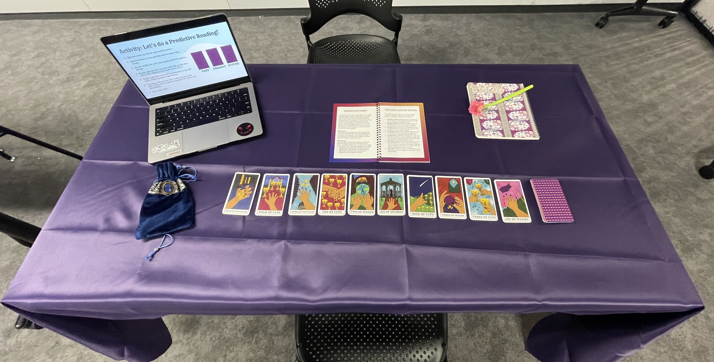
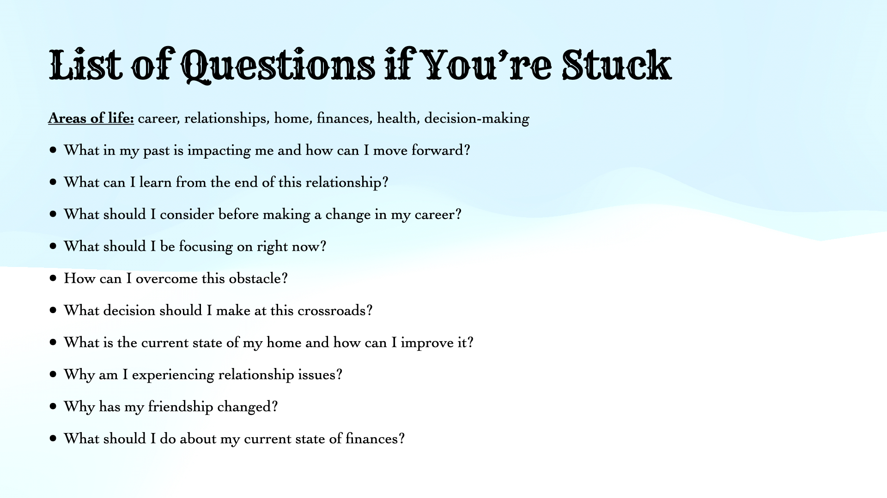

Thesis Weekly Update #7
March 11, 2024: Demo Day Feedback


Accessible Card Design Feedback
- Check that the text font is readable - there are camera checkers for accessibility, look into Seeing AI
- Check that there is good color contrast in the imagery (quality of printing paper impacts color saturation)
- Make the cards tactile - look into embossing
- Add a notch to the back of the cards so users immediately know which one is right side up
Digital Component Feedback
- Add QR codes to card so booklet descriptions can exist on the web - make screen reader accessible
- Make visual description of card imagery more distinct - maybe put this separately before the narrative
Videos Feedback
- Helpful for learning how to read cards in layouts
- They should be 30-60 seconds long max
Future Presentation / Thesis Showcase Feedback
- Create a poster with the card imagery to draw audience in - set up on an easel
- Highlight 5-7 key unique value proposition of my card deck
- Emphasize the learning design approach to my tarot card design, as well as the unique value of a user-empathy, narrative-driven approach to learning what each card means
- Have audience members read for each other as opposed to me reading for them first